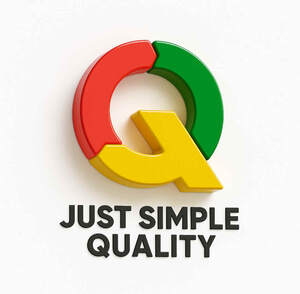
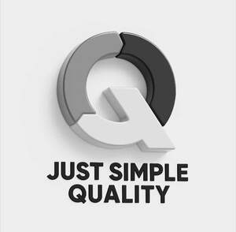

Trade Mark Journal No.2025/038 19 September 2025
UK00004260327 6 September 2025 (35)
Mark 1

Mark 2

- Class 35
- Online business networking services; Marketing consulting; Consulting services in the field of Internet marketing; Online advertising services; Business research consulting; Business consulting; Conducting online business management research surveys; Business marketing consulting services; Providing a searchable online advertising guide featuring the goods and services of online vendors; Business consulting services; Online advertising; Online community management services; Online ordering services; Business information services provided online from a computer database or the internet; Business management consultancy via the Internet; Professional business consulting; Business management consultancy, also via the Internet; Consulting services relating to marketing; On-line advertising and marketing services; Business information services provided online from a global computer network or the internet; Direct marketing consulting; Business management and consulting services; Business management consulting services; Business management consultancy services provided via the Internet; Business management and consulting; Business management consulting; Online retail services in relation to downloadable virtual footwear; Online retail services for downloadable virtual clothing; Business information services provided on-line from a computer database or the internet; Online retail services relating to jewelry; Online retail services for downloadable digital music; Online retail services in relation to downloadable virtual handbags; Online retail services relating to cosmetics; Management consulting; Online retail services in relation to downloadable virtual headwear; Business organisation consulting; Business organisation and management consulting services; On-line advertising; Business organization consulting; Consulting services in business organization and management; Business marketing consultation services; Online retail services in relation to downloadable virtual clothing; Online retail services relating to handbags; On-line auctioneering services via the Internet; Compilation of online business directories; Business relocation consulting; Online retail services relating to clothing; Business process management and consulting; Business organisation and management consulting; Computerized on-line ordering services; Career placement consulting services; Professional business consultancy services; Business organization and management consulting; Online retail services relating to luggage; Business consulting for enterprises; Business consultancy; Business planning and business continuity consulting; Consultancy (Professional business -); Professional business consultancy; Business consultancy (Professional -); Business consulting services for digital transformation; Business planning consultancy; Consultancy regarding business organisation and business economics; Business organization consultancy; Business management and consultancy; Business management consultancy; Business research services; Business management and consultancy services; Business management consultancy services; Business consultation; Business consultancy to firms; Business management for freelance service providers; Strategic business consultancy; Business consultation services; Business consultancy to individuals; Business administration consultancy; Business management and organization consultancy services; Business recruitment consultancy; Consultancy relating to business advertising; Business networking services; Business consultancy and advisory services; Business advisory and consultancy services; Business management advice relating to manufacturing business; Professional consultancy relating to business management; Business management and consultation services; Business management and organization consultancy; Advisory services relating to business management and business operations; Professional business consultations; Business consulting services in the agriculture field; Business management and consultation; Business management consultation; Professional business consultation relating to the operation of businesses; Business management and enterprise organization consultancy; Business management consultancy and advisory services; Consultancy and advisory services for business management; Business research and advisory services; Consultancy and advisory services in the field of business strategy; Business planning services; Business networking; Business management services; Business management and organisation consultancy services; Business process management consultancy; Business research for new businesses; Business organization and operation consultancy; Business advisory services; Business expertise services; Business auditing; Consultancy services regarding business strategies; Business planning services for enterprises; Advice in the field of business management and marketing; Business organisation consultancy; Consultancy relating to business management; Advisory services (Business -) relating to the management of businesses; Business consultancy services relating to manufacturing; Business organizational consultation; Business strategy and planning services; Providing advice in the field of business management and marketing; Business management; Business management and organisation consultancy; Business management organisation consultancy; Business organisation and management consultancy; Consultancy relating to business planning; Advisory services for business management; Business management advisory services; Consultancy and advisory services relating to business management; Business expertise; Management (Advisory services for business -); Business project management services; Outsourcing services [business assistance]; Business advice and consultancy relating to franchising.
Just Simple Quality Ltd